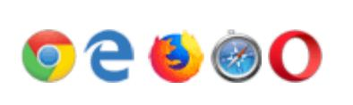
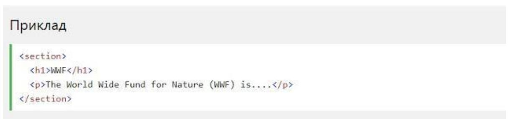
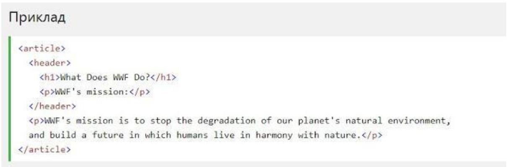

HTML5 Семантичні елементи
Семантичний елемент чітко описує його значення як для браузера, так і для розробника.
Приклади не семантичних елементів: div і span нічого не говорить про його вміст.
Приклади семантичних елементів: form, table і article - чітко визначає його зміст.
Підтримка браузерів
Семантичні елементи HTML5 підтримуються у всіх сучасних браузерах.
Крім того, ви можете "навчити" старих браузерів, як обробляти "невідомі елементи".
Прочитайте про це в підтримці браузера HTML5
Нові семантичні елементи в HTML5
HTML5 пропонує нові семантичні елементи для визначення різних частин веб-сторінки:
- section
- article
- header
- footer
HTML5 section елемент
Елемент section визначає розділ в документі.
Згідно з документацією в3к'с HTML5: "розділ представляє собою тематичну угруповання контенту, зазвичай з заголовком".
Домашня сторінка зазвичай може бути розділена на розділи для ознайомлення, змісту і контактної інформації.
HTML5 article елемент
Елемент article визначає незалежний, автономний вміст.
Стаття повинна мати сенс самостійно, і вона повинна мати можливість читати його незалежно від іншої частини веб-сайту.
Приклади того, де можна використовувати елемент article:
- Повідомлення на форумі
- Блозі
- Газетна стаття
HTML5 header елемент
Елемент header задає заголовок для документа або розділу.
Елемент header повинен використовуватися в якості контейнера для вступного змісту.
В одному документі може бути кілька елементів header.
У наступному прикладі визначається заголовок для статті:
